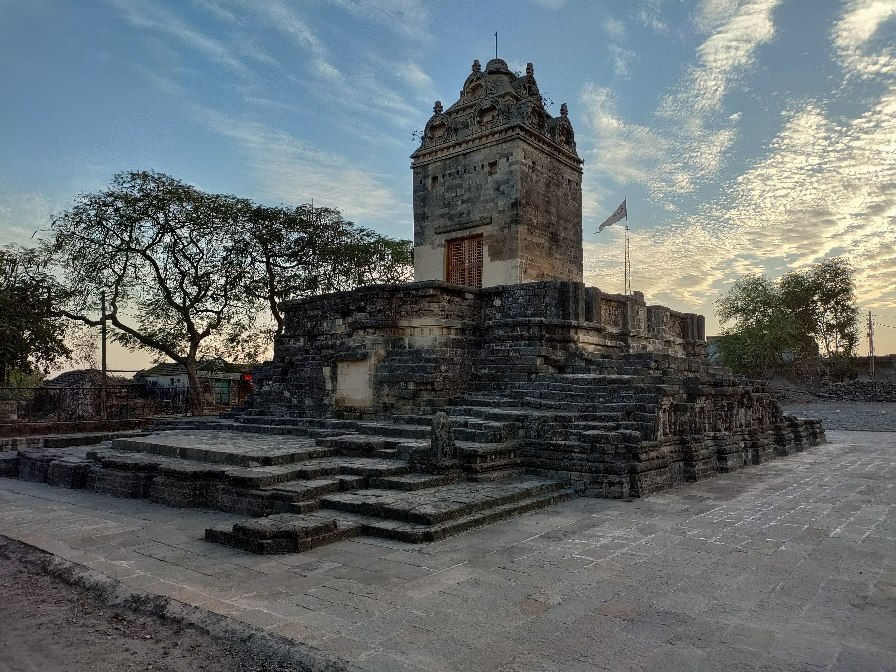
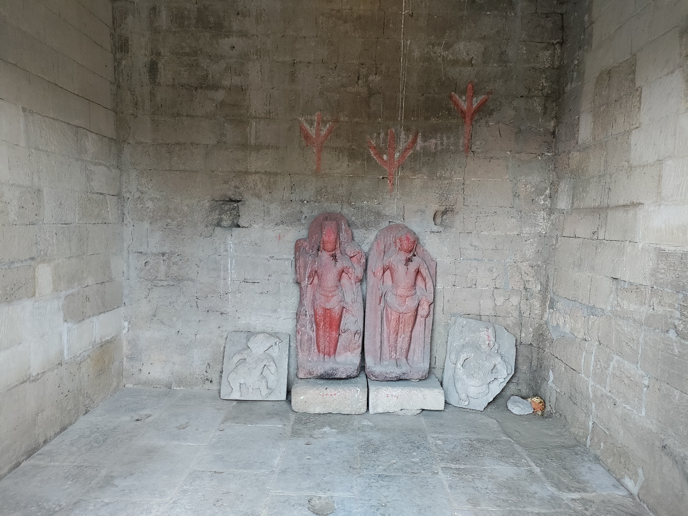
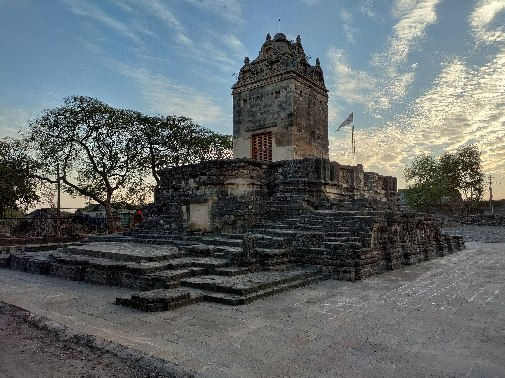
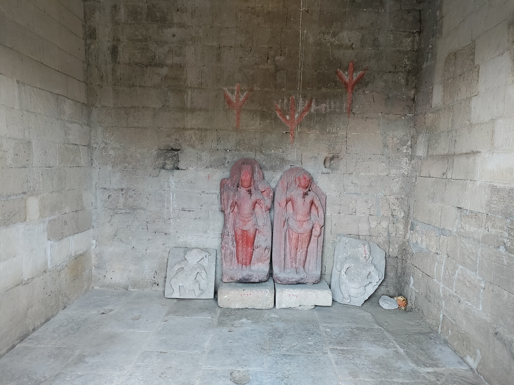

About Gop
Gop is a small village located near Dwarka in Gujarat, India, known for its religious and cultural significance. It holds a special place in Hindu mythology, especially in connection to Lord Krishna. According to legend, Gop is believed to be one of the places where Lord Krishna spent his childhood days and played with the Gopis (milkmaids) and his friends. It is often associated with the Gop-Balachan tradition, which celebrates Lord Krishna’s early life and his divine interactions with the Gopis.
Top Attractions
- Gop Temple: The village is home to an ancient Gop Temple, dedicated to Lord Krishna, and it is a popular site for devotees, especially during festivals like Janmashtami.
- Sun Temple: This temple is dedicated to the sun god, Surya, and is one of the many sun temples in Gujarat, which have been built to honor and worship the sun.
Gallery
 


